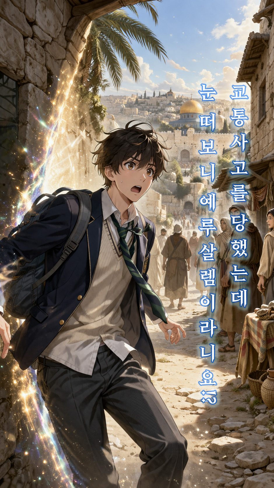

교통사고를 당했는데
눈 떠보니 예루살렘이라니요!?
교통사고를 당했는데
눈 떠보니 예루살렘이라니요!?

게임 시작
터치해서 힘을 보태세요
주인공
◀ 이전
다음 ▶
획득한 단서
각 퀴즈를 풀면 정답 조합에 필요한 단서를 하나씩 얻습니다. 순서는 섞여 있습니다.
◀ 이전 (스토리)
퀴즈
다음 ▶
최종 정답
지금까지 모은 단서를 조합해 마지막 정답을 입력하세요.
최종 정답 제출